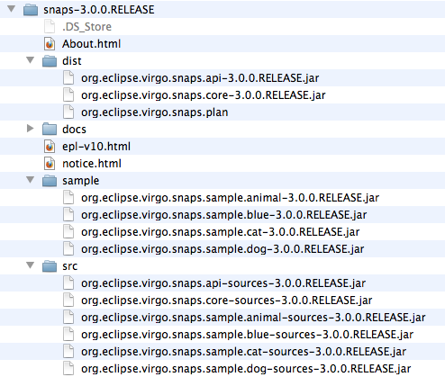

VS is distributed as a Zip file. This can be downloaded from here.
Once the Zip file is unpacked you will find several things inside, including a copy of this documentation in the
docs folder. The layout is shown below.
|  |
Take the bundles and plan in the dist folder and place them in either the /repository/usr
or /repository/ext folder of your Virgo install. Later you need the bundles in the sample
folder. If you wish to view the source for VS or its sample, then these are in the src
folder.
In order to start the Snaps system as a part of your Virgo Tomcat Server, the Snaps plan needs to be referenced
from the initialArtifacts property. This is located in the config file at
${SERVER_HOME}/config/org.eclipse.virgo.kernel.userregion.properties. The property should be
extended like this.
initialArtifacts=repository:plan/org.eclipse.virgo.kernel.userregion.springdm,
repository:plan/org.eclipse.virgo.web.tomcat,
repository:plan/org.eclipse.virgo.snapsNow you are ready to check that Snaps is working.